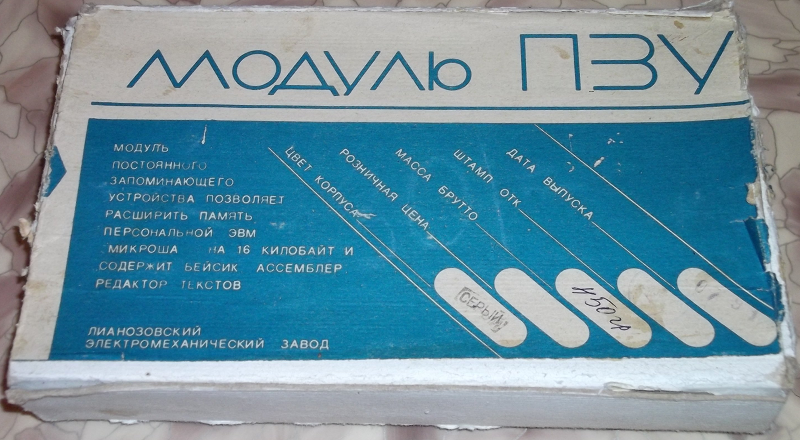

Устройство "Модуль ПЗУ" для Микроши выпускалось отдельно. Цену в рублях СССР выяснить не удалось. Судя по составу компонентов, цена устройства должна была быть не выше 100-120 руб. (цена самой Микроши была 500 руб).
Такой модуль ПЗУ превращал Микрошу в прекрасный бытовой компьютер своего времени, который можно было включить, и сразу сделать математические вычисления с помощью Бейсика. (В стандартной поставке, Микроша, сразу после включения, предоставлял возможность работы только в машинных кодах).Так же не нужно было двухэтапной загрузки с лен
Сам модуль и его коробка выглядели вот так:
